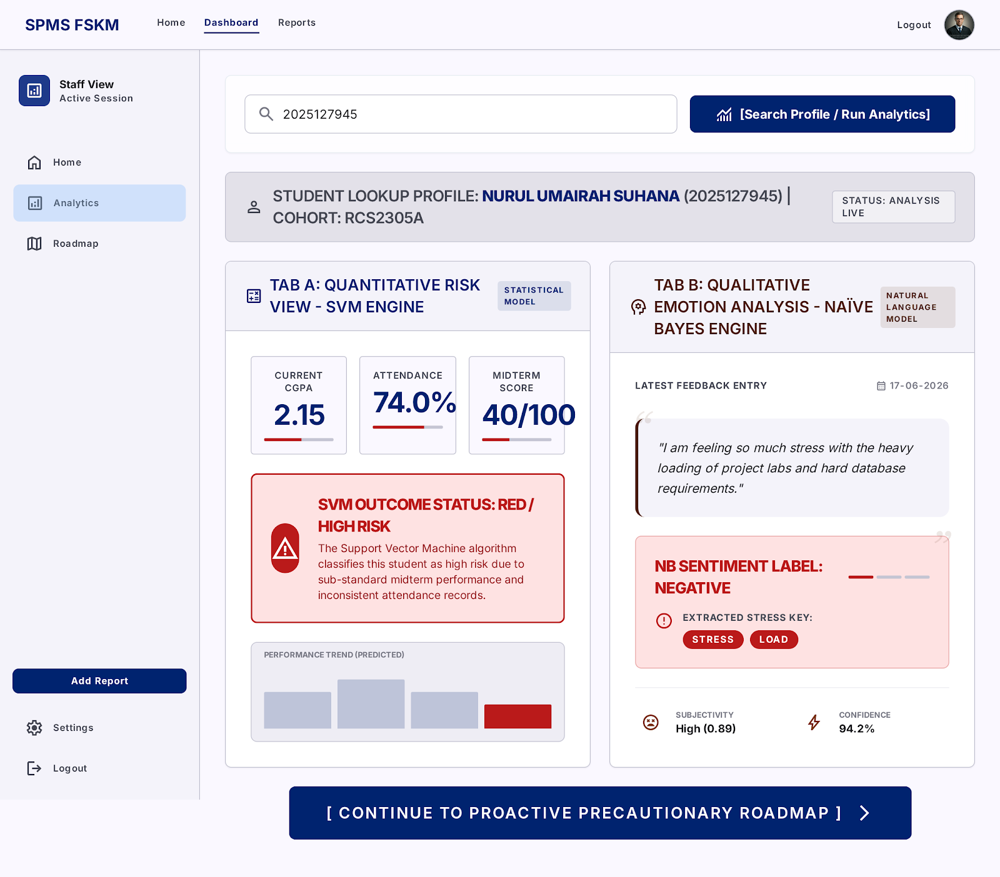

Final Year Project • ML & Web
Hybrid Student Performance Monitoring System
Cohort-based early-warning platform combining SVM (quantitative grades) and Naïve Bayes NLP (student feedback) to classify High, Medium, and Low risk tiers and generate precautionary roadmaps.
View Repository →